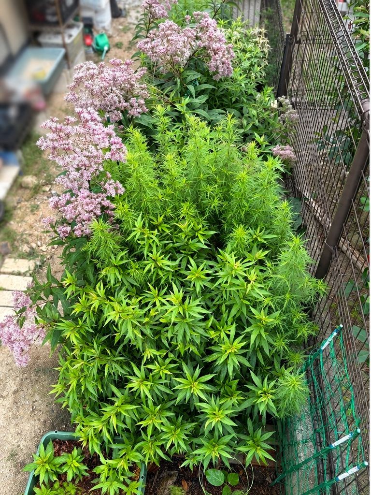
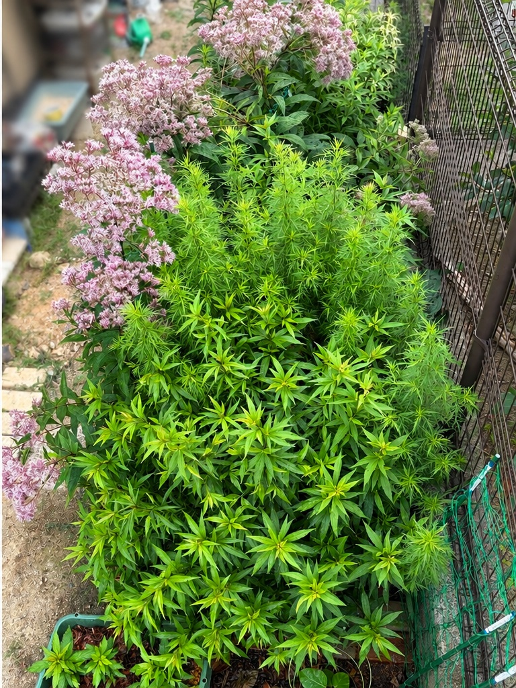

7月の蕾から、花壇を彩る開花へ
7月12日に多数の蕾を確認していたユーパトリウム・ベイビージョーが、8月9日には一斉に花を咲かせ、花壇の印象が大きく変わりました。淡いピンク色の細かな花が大きな花房となって広がり、緑が中心だった花壇にやわらかな色が加わっています。


写真を見て感じたこと
7月12日の写真では、茎の先端に小さな蕾がまとまって付き、これから咲き始める段階でした。それから約4週間で、蕾だった部分が大きな花房へ変わっています。ひとつの花房だけが咲いているのではなく、花壇の奥から左側にかけて複数の花房が立ち上がり、かなり存在感が出てきました。
花房は細かな花が集まってふんわりと広がり、遠くから見ると淡いピンク色の雲が浮いているようにも見えます。背丈のある茎の先で花が広がるため、株元の濃い緑との高低差もはっきりし、花壇全体に立体感が出ています。
一方で、花壇の中央から手前にはまだ緑の葉が多く残っています。すべてが同時に同じ姿になるのではなく、開花している部分とこれから変化していく部分が混在していることで、花壇全体の景色が少しずつ移り変わっているのが分かります。7月の「蕾を確認した時期」と比べると、8月は花壇としての華やかさが一段増したように感じます。
0 件
← 前 2026/07/12はこちら次 → 2026/09/02